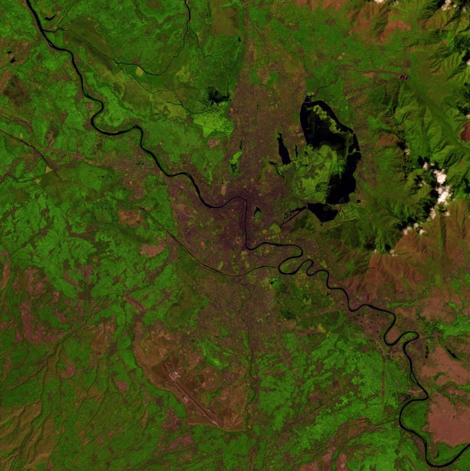
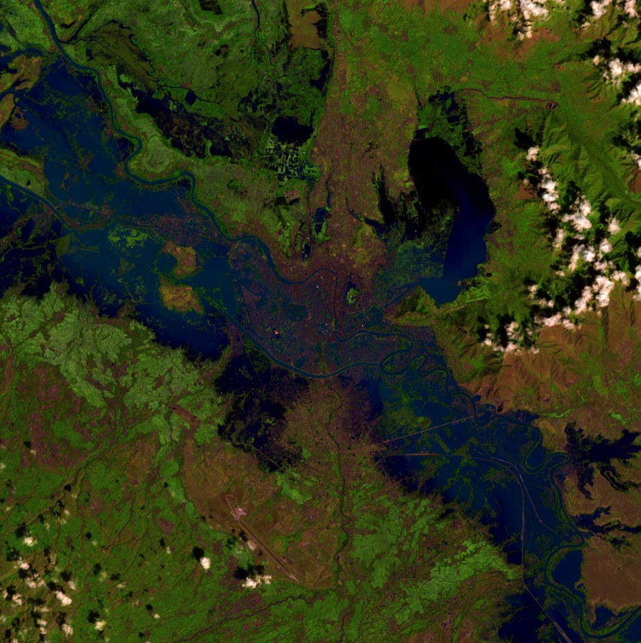

Flooded area
km²
Range – km² depending on the water cut-off chosen. On the valley floor connected to Srinagar ( km²), at one moment on .
Kashmir valley ·
What one satellite image, taken at UTC on , shows of the water in the Kashmir valley, and what it cannot show.


km²
Range – km² depending on the water cut-off chosen. On the valley floor connected to Srinagar ( km²), at one moment on .
km²
of the flooded area lay outside mapped lakes and wetlands; km² lay inside them, including lake surface that was covered by plants in August, such as parts of Wular. Permanent water on both dates: km².
km
of the km of motor roads in today's OpenStreetMap lie on ground that was flooded; km of them in and around Srinagar.
About
buildings standing today on ground that flooded ( footprints counted by their centre, if any overlap counts). From outlines traced by computer in images of –: not a count of buildings flooded in 2014, and likely low in the old city.
Not assessed because of cloud: km² ( % of the area). Every number on this page is read from results.json, which the scripts write from the recorded analysis outputs.
The Landsat 8 satellite photographed the valley on , before the flood, and again on , during it. Each image is a grid of squares m across.
Water absorbs shortwave infrared light that land reflects. A simple ratio of green to shortwave infrared light (the MNDWI index) marks a square as water when it is above , a cut-off found automatically from the flood-day picture.
Squares hidden by cloud, cloud shadow or snow on either date are left out and reported, not guessed.
A square that is water in September but was dry in August counts as flooded. Water on both dates, the river and the lakes, does not. Only the valley floor below m that connects to Srinagar is measured.
Today's road map and building outlines are laid over the flood map, and the roads and buildings on flooded squares are counted.
The rules for each step were written down and committed before the result was computed. Every choice and number is in METHODS.md.
Shown for context only. This measurement was not adjusted toward them. The figures were supplied by the project and have not been checked against the original publications here.
| Source | Figure | Dates | Sensor | How it differs |
|---|
This measurement: one Landsat 8 image on , optical index at m, valley floor connected to Srinagar.
Code: MIT licence. Text, figures and this page: CC BY 4.0. Data derived from OpenStreetMap or Microsoft footprints remain under the Open Database License.
The analysis was directed by Anaum Pandit. The code was written with Claude Code.